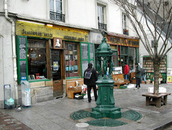
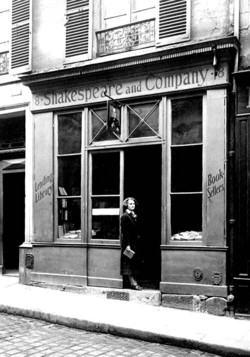

Jorge Furtado


Dia 7 de abril de 1775, sexta-feira. O patriotismo se tornou um dos nossos assuntos e Johnson de repente proferiu, num tom determinado e forte, uma frase lapidar, que poderá surpreender a muitos: "O patriotismo é o último refúgio de um canalha". É preciso levar em consideração que ele não se referia ao amor real e generoso pelo nosso país, mas ao patriotismo fingido o qual tantos, em todas as épocas e países, fizeram de manto a encobrir seus interesses pessoais.
Life of Johnson, de James Boswell, pág. 615, Oxford University Press, 1998.
Friday, 7 April 1775. Patriotism having become one of our topicks, Johnson suddenly uttered, in a strong determined tone, an apophthegm, at which many will start: "Patriotism is the last refuge of a scoundrel". But let it be considered that he did not mean a real and generous love of our country, but that pretended patriotism which so many, in all ages and countries, have made a cloak of self-interest.*

Shakespeare and Company, Paris, marco zero.

Sylvia Beach 1919
Procurei e achei o livro de Boswell, versão integral, 1492 páginas, na Shakespeare and Company, mitológica livraria no marco zero de Paris, de frente para a Notre-Dame. A livraria foi aberta em 1951 pelo americano George Whitman - não, ele não é descendente do Walt, embora pareça - e desde então apóia e hospeda jovens escritores sem dinheiro, várias camas surgem como ninhos entre as pilhas de livros nos três andares da loja. Ocuparam temporariamente os colchões da livraria mortos de fome como Henry Miller, Anäis Nin, Lawrence Durrell e Alan Ginsberg.
George Whitman herdou o nome e a tradição da livraria de Sylvia Beach, outra americana que se apaixonou por Paris no início do século 20. Sylvia estudava literatura francesa quando Adrienne Monnier abriu a La Maison des Amis des Livres e se tornou a primeira mulher a ter uma livraria na cidade. Ficaram amigas. Com a ajuda de Adrienne, Sylvia abriu a Shakespeare and Company, uma livraria de língua inglesa que apoiava jovens autores, geralmente americanos perdidos na cidade. Ganhou fama em 1922 por editar Ulisses, de James Joyce. A livraria quase quebrou na depressão dos anos 30, foi salva por uma associação de escritores, organizada por André Gide. Sylvia conseguiu manter a primeira Shakespeare and Company até 1941, quando as portas foram fechadas pela Segunda Guerra Mundial, um motivo bem razoável. Entre os clientes da lojinha estavam, além de Joyce, D. H. Lawrence, Ernest Hemingway, Ezra Pound, T. S. Eliot, Gertrude Stein e Man Ray. Em 1944 Hemingway foi pessoalmente reabrir a livraria na Paris recém liberta dos nazistas, mas foi um ato simbólico, a livraria acabou.
George recebeu de Sylvia a autorização de usar o nome, reabriu a Shakespeare and Company em 1951 e a mantém aberta até hoje. Tem 91 anos e ainda aparece por lá. É difícil encontrar algum livro na bagunça geral mas é muito divertido procurá-los.
O jornalista canadense Jeremy Mercer foi um morador recente e descreveu a experiência, meio-ano dormindo entre livros, em Um livro por dia, minha temporada parisiense na Shakespeare and Company, editado no Brasil pela Casa da Palavra. O livro é muito bom, divertido, conta um pouco da história da livraria e constrói um belo retrato de George. Mas o título engana, Mercer não leu um livro por dia ou, se leu, não diz quais foram, ele comenta não mais que seis livros lidos, um por mês.
Já o Doutor Samuel Johnson (Lichfield, Staffordshire, 7 de Setembro de 1709 - Londres, 13 de Dezembro de 1784) leu milhares de livros, foi um grande estudioso da língua inglesa, autor de um Dicionário (1755) e da edição comentada das Obras Completas de Shakespeare (1765), cujo prefácio se tornou célebre. Johnson foi o primeiro intelectual importante a reconhecer a grandeza literária de Shakespeare, o que já serve como currículo, não precisava ter feito mais nada. Fez, muito mais, escreveu romances e ensaios, criou um clube literário com seu amigo Edward Gibbon, mas se tornou realmente conhecido ao ser retratado por James Boswell em A Vida de Johnson, livro que inaugurou um novo gênero literário, a biografia.
É claro que muitas outras biografias já haviam sido escritas, as Vidas Comparadas, de Plutarco, século 1, são biografias. Mas os biografados de Plutarco eram gregos e romanos ilustres que fizeram ao seu biógrafo a gentileza de morrer. Johnson estava bem vivo. Boswell teve a idéia de escrever sobre a vida de um ilustre homem vivo, tentou Voltaire e Rousseau, queria acompanhá-los, registrar seus hábitos diários, foi corrido.
Johnson, um velho ranzinza e solitário, conheceu o jovem James Boswell numa livraria. Boswell era escocês, filho de nobres decadentes, herdou um castelo em ruínas. Johnson não gostava de escoceses mas, depois de muitas conversas, talvez comovido pelas constantes manifestações de admiração que lhe prestava um jovem aristocrata, concordou em ser biografado.
Me interessei pelo livro de Boswell a partir do Curso de Literatura Inglesa, de Jorge Luis Borges, a aula número 10 é inteira sobre o livro. Borges cita um ensaísta inglês, Thomas Macaulay:
"A primazia de Homero como poeta épico, de Shakespeare como poeta dramático, de Cervantes como romancista, não é menos indiscutível que a primazia de Boswell como biógrafo".
Pois este homem, James Boswell, que divide com Homero, Shakespeare e Cervantes o Olimpo dos gêneros literários era, segundo muitos relatos e também pelo que podemos concluir dos seus próprios escritos, um bobo.
A idiotice de Boswell é assunto de longos e divertidos debates. Há quem defenda a tese que ele se faz de tosco para realçar o brilho de Johnson, algo como a covardia simplória de Sancho que ressalta o caráter heróico de Dom Quixote, ou a mediocridade de Watson que amplifica o gênio de Sherlock. Pode ser e, se for, Boswell construiu com perfeição seu próprio personagem, ele não faz nenhum esforço para esconder suas limitações.
Para conhecer melhor seu biografado, Boswell pergunta, por exemplo, "o que faria o senhor se estivesse trancado numa torre com uma criança recém nascida?" A resposta de Johnson não pode ser mais constrangedora: "Não penso em responder a uma idiotice dessas". Boswell anotava e publicou tudo, a ponto de Macaulay afirmar que a sua fama é "de um tipo muito peculiar e, na realidade, se parece maravilhosamente com a infâmia".
Borges desconfia, e eu também, que Boswell foi um gênio em sua tosquice. Tinha o talento de reconhecer suas limitações. Diz o covarde Parolles (Tudo está bem quando termina bem, IV,3), quando é desmascarado, humilhado e perde sua patente de Capitão: "Não serei capitão, mas acaso por isso vou deixar de comer, de dormir, como faz um capitão? A coisa que sou me fará viver". (The thing I am shall make me live). Talvez Boswell tenha percebido ser um idiota e tenha feito disso uma arte.
*
Life of Johnson by James Boswell
Um livro por dia, no site da editora Casa da Palavra.
Site da Shakespeare and Company.
Sobre Sylvia Beach e a primeira Shakespeare and Company.

{kind=link}
{kind=link}
Tem uma máxima do Professor Aníbal Damasceno Ferreira que, de certa forma, confirma a última frase do texto do Jorge: "Arte não tem nada a ver com esperteza".